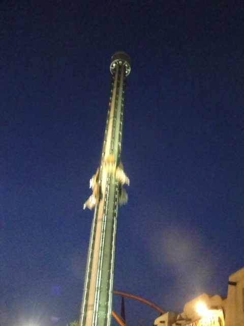
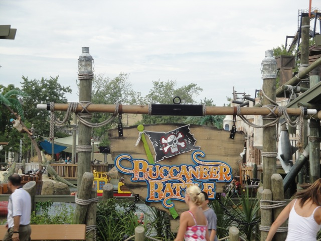

Six Flags Great America is definetly one of the prettier and nicer parks in the Six Flags chain. Good coasters, good balance, just a really good. Though, on my first visit, I had to spend a lot of my time waiting in line, so I couldn't do too much there. Then when I returned with Gold Q Bots, they enabled me to really explore the park, and it's a really freaking nice park. And of course, the backstage tours, ERT, and other perks that come on a TPR Trip help as well. But still, this place kicks ass. Not only does it have a high quality collection of roller coasters, but it has a decent flat ride collection, some good water rides, what appears to be a really nice water park, and a really nice atmosphere. And since my last visit, not only did they get X Flight, A B&M Wing Rider, but they also got an S&S Free Spin, an S&S Launched Coaster, and a Rocky Mountain Coasters wooden coaster that looks really good! And judging from the companies first wooden coaster, I think its a safe bet to predict that this ride is gonna be really good. I know people have called it one of the weaker ones, but still! It looks really freaking good! Seriously, all they need is a good dark ride, and they'll have a perfectly balanced park. Now I've heard some bad things about how the park has really gone downhill since my last visit, and how it became more like Six Flags Over Texas. This makes me sad as Six Flags Great America is my favorite Six Flags park based off the two visits I've taken so far. But I'm going to judge the park based on the visits I've taken and how it was running then. So yeah. This is definetly a park you'll want to spend the whole day at. If you're ever planning a roller coaster trip in the Midwest or are taking a vacation to Chicago, take a visit to Six Flags Great America. It's definetly one of the best parks in the Six Flags Chain.
Here are the reviews of all the Flat Rides at Six Flags Great America. Unlike it's Southern California cousin, Six Flags Great America has a fairly good flat ride collection. The best of these flat rides would be Giant Drop. Giant Drop is a 2nd Generation Intamin Drop Tower. While it's not unique or anything, it's still a 2nd Generation Intamin Freefall, and therefor, it kicks ass. Next flat ride to discuss, Revolution. this is a typical Huss Frisbee, which is also a very fun ride to ride. This one however, didn't run too great of a program. At first, it barely spins at all and feels more like a pirate ship. Then at the very end, it starts to get insane, but then it's over. While not the best frisbee program, it's far from the worst program and is still a very fun ride. Next flat ride to discuss, King Chaos. This was the park's Top Spin. It actually ran a pretty good program for a Top Spin. It did some flips and was fairly comfortable. But sadly, it's been removed. Man, Top Spins are really starting to become rare. Bummer, they are fun rides. Up next, Fiddlers Fling. Now normally, I'm not a fan of spinny rides because usually, they're too tame. But Fiddlers Fling is f*cking insane. It spins, and it spins A LOT!!!!!!! And they keep it open before a thunderstorm, so that's more good news for you. And finally, the condor. This is a fun condor and all, but it's just a condor. Nothing special. Other flat rides they have here are an enterprise, a Super Loop that claims to be the biggest one ever (riveting), some teacups, an octopus ride, a scrambler, a strange ride that tilts you 90 degrees in the air, some bumper cars, a troika, some chairswings, a Rockin Tug, an observation tower, and of course, the famous Marriot Double Decker Carousel that still resides at both Great America Parks.

Giant Drop. It may be a clone, but dammit!! It's fun!!
Water Rides
I never rode any of the water rides at Six Flags Great America. But from what I saw, it seems like a decent collection of water rides. They have a two log flumes, both of which that looks cool. They also have a river rapids ride, a shoot the chutes that resembles Tidal Wave, and they even have a Splash Battle, which from my experiences, are pretty fun rides if you really want to get wet.

See, they now have a Splash Battle here.
Water Park
And then there's their water park. I never went to it, but DAMN!!! It looks REALLY good!!! And I mean REALLY GOOD!!!! I totally have to give this a visit next time.
Dining
Ok, so the food here is nothing special. The food didn't wow me in any way in either of my visits. The hot dog I got in 2008 was typical, and the burger I got in 2010 was just standard. However, they do have something unique at Six Flags Great America. Over by Superman Ultimate Flight, they have a churro stand that sells different flavored churros. I ended up getting a strawberry flavored churro that really tasted good and helped time move by while waiting in that long line.
Theming and Other Attractions
Here are the reviews of all the other stuff at Six Flags Great America. As for theming, there's not too much since this is a Six Flags Park. But it does have a nice atmosphere and there is a Western Themed Area that actually looks really cool. Although some of the theming doesn't match, such as having Superman in the New Orleans. It doesn't fit. Well, I suppose it could make sense if Superman was helping clean up the effects of Hurricane Katrina, but considering how there's no Hurricane theming, it does't work. As for other attractions, I'm sure they have some shows or stuff like that. But I never did anything like that nor do I have time to find the other stuff.
In Conclusion
Six Flags Great America is a fantastic park and is without a doubt, one of the best parks in the Six Flags Chain. Like I said before, it's a very balanced park with very good coasters, good flats, and overall, something for everyone to do. The park is kept clean, people are friendly, and it's overall, a really fun park to be in. Come here if you are ever in the Chicago area. This is one park you'll regret missing if you don't.
Enthusiast FAQs.
*Are there kiddy coaster restrictions? - No and No. There are no restrictions for Little Dipper or Spacely's Sprocket Rockets.
Tips
*Get a Gold Q Bot if it's summer. It'll most likely be worth it.
*Get on the kiddy coasters in the morning since they arn't on the Qbot
*If you don't get a Qbot, run to Superman (or Goliath) first and then get the credits mentioned above.
*Sit in the back of Raging Bull
*Be sure to ride Viper at night after it warms up.